1. Introduction and assumptions
In this post-series, we are going to study the very basic modelling for classification problems with logistic regression algorithms. Classification entails that the output is a discrete variable taking values on a predefined limited set, where the set dimension is the number of classes. Some examples are spam detection, object recognition and topic identification.
We analyzed the theory in the first post, implement the algorithm with Numpy in Part 2 and using Sklearn and Tensorflow in Part 3.
We solved a binary classification problem for multivariate non-linear logistic regression in Scikit-learn in Part 4 and extended the analysis to multinomial classification in Part 5.
After having played with the tic-tac-toe gaming example in Part 6, we shift to a bit harder problem, the digits dataset.
In this series, we do not split the dataset into training and testing sets, but we assess every model on the training set only. A dedicated post on model selection, overfitting/underfitting problem and regularization will be published soon.
Let’s get started!
2. Digits dataset collection
The digits dataset comes with Scikit-learn directly and therefore do not require any file downloading from external websites.
The following code will load the required libraries and the dataset. We can see that there are 1797 (8x8) images with 1797 labels from 0 to 9.
import numpy as np
import matplotlib.pyplot as plt
%matplotlib inline
import pandas as pd
import numpy as np
from sklearn.datasets import load_digits
from sklearn.linear_model import LogisticRegression
from sklearn import metrics
digits = load_digits()
print("Image Data: {}, Label Data: {}".format(digits.data.shape, digits.target.shape))
print("Response variable set: {}".format(np.unique(digits.target)))
Image Data: (1797, 64), Label Data: (1797,)
Response variable set: [0 1 2 3 4 5 6 7 8 9]
3. Dataset visualization
We extract 10 examples spanning 3 rows one to another.
We need to reshape each (64,) sample into an (8, 8) array to get a human easy-to-read image.
Nr, Nc, span = 2, 5, 3
Nel = Nr*Nc
plt.figure(figsize=(18,8))
for idx, (image, label) in enumerate(zip(digits.data[0:Nel*span:span], digits.target[0:Nel*span:span])):
plt.subplot(Nr, Nc, idx + 1)
plt.imshow(image.reshape(-1, 8), cmap='Blues')
plt.title('Label %i\n' % label, fontsize = 16)
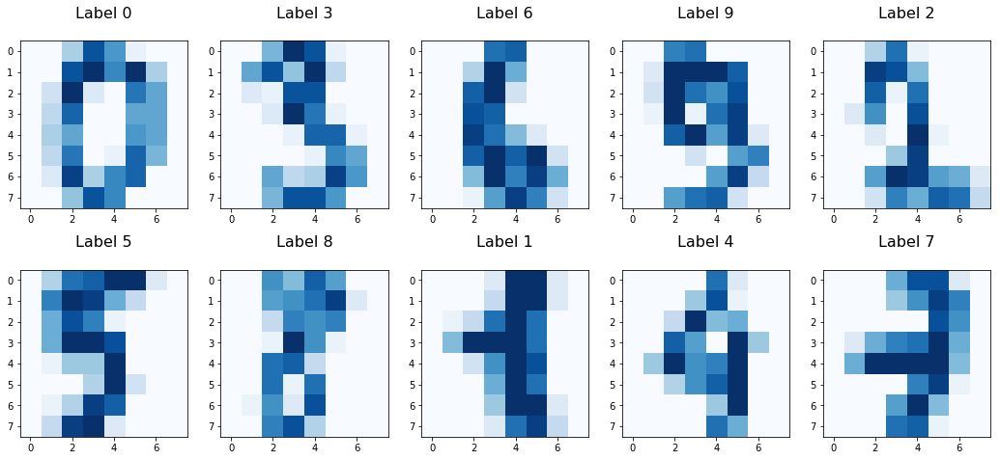
We also visualize how the dataset examples are distributed over the 10 response classes, by counting how many times each of the 10 response classes occurs in the dataset. The result confirms that the dataset is equally distributed over the different classes.
unique, counts = np.unique(digits.target, return_counts=True)
print("Counting how many times each of the 10 response classes occurs in the dataset\n{}".format(dict(zip(unique, counts))))
Counting how many times each of the 10 response classes occurs in the dataset
{0: 178, 1: 182, 2: 177, 3: 183, 4: 181, 5: 182, 6: 181, 7: 179, 8: 174, 9: 180}
4. Training the logistic regression model
Now we run the training step and we get the model outcome response that is compared to the ground-truth response to get the model main metrics. The results are close to perfection!
XX, YY = digits.data, digits.target
lgr = LogisticRegression(C=1e5) # we want to ignore regularization
lgr.fit(XX, YY)
Ypred = lgr.predict(XX)
print("Accuracy: {}".format(metrics.accuracy_score(YY, Ypred)))
print("Precision: {}".format(metrics.precision_score(YY, Ypred, average='weighted')))
print("Recall: {}".format(metrics.recall_score(YY, Ypred, average='weighted')))
Accuracy: 0.9988870339454646
Precision: 0.9988870339454646
Recall: 0.9988870339454646
5. Model accuracy
We also want to understand a bit deeper which label the model has struggled the most. To this end, we define the confusion matrix, which is a table used to describe the performance of the classifier at labelling one specific class of the response variable and to easily spot which other labels are instead picked by the model when it is wrong.
cm = metrics.confusion_matrix(YY, Ypred)
cmDisp = cm.astype(float)
cmDisp[cmDisp==0] = np.nan
plt.figure(figsize=(9,9))
plt.imshow(cmDisp, cmap='Set2') #, interpolation='nearest', cmap='Pastel1'
plt.title('Confusion matrix', size = 15)
plt.colorbar()
tickMarks = np.arange(10)
tickLabels = [str(num) for num in range(10)]
plt.xticks(tickMarks, tickLabels, size = 10, fontsize=12)
plt.yticks(tickMarks, tickLabels, size = 10, fontsize=12)
plt.tight_layout()
plt.ylabel('Actual label', size = 15)
plt.xlabel('Predicted label', size = 15)
width, height = cm.shape
for x in range(width):
for y in range(height):
plt.annotate(str(cm[x][y]), xy=(y, x), horizontalalignment='center', verticalalignment='center')
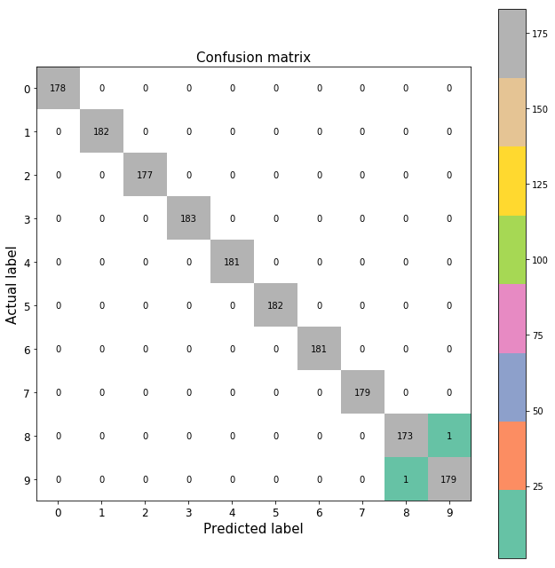
6. Error analysis
We have two misclassified samples only, which we show below. The charts on the LHS are displayed with different blue hues, related to the pixel intensity, while the RHS charts are plotted with grey hues.
Nr, Nc, span = 2, 5, 3
Nel = Nr*Nc
errIdxs = np.where(YY!=Ypred)[0]
plt.figure(figsize=(18,8))
for row, idx in enumerate(errIdxs):
plt.subplot(errIdxs.shape[0], 2, 2*row + 1)
plt.imshow(digits.images[idx].reshape(-1, 8), cmap='Blues')
plt.title('Actual label: {}, predicted label: {}'.format(YY[idx], Ypred[idx]), fontsize = 16)
plt.subplot(errIdxs.shape[0], 2, 2*row + 2)
plt.imshow(digits.images[idx].reshape(-1, 8), cmap=plt.cm.gray)
plt.title('Actual label: {}, predicted label: {}'.format(YY[idx], Ypred[idx]), fontsize = 16)
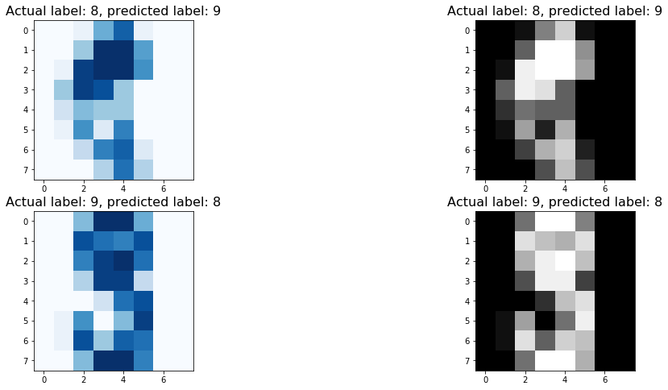
7. Model parameter analysis
In the final section, we display the model parameter (or weight) values stored in the (64,10) 2D array Wcoef.
We can treat this 2D array as a horizontal concatenation of 10 (64,) 1D arrays, one for each class.
Each 1D array stores the weights of every pixel of the image, out of the 64 total ones.
If we reshape this 1D array, we can visually get the alignment between the pixel (inputs) and the weight.
7.1 Average inputs per class
The figure shows the average input for each class kk.
We can easily read each number from 0 to 9.
plt.figure(figsize=(17, 9))
for kk in range(10):
plt.subplot(2, 5, kk+1)
Xavg = np.mean(XX[YY==kk, :], axis=0).reshape(-1, 8)
plt.imshow(Xavg, cmap='inferno')
plt.title('Label: ' + str(kk), fontsize = 16)
plt.axis('off')
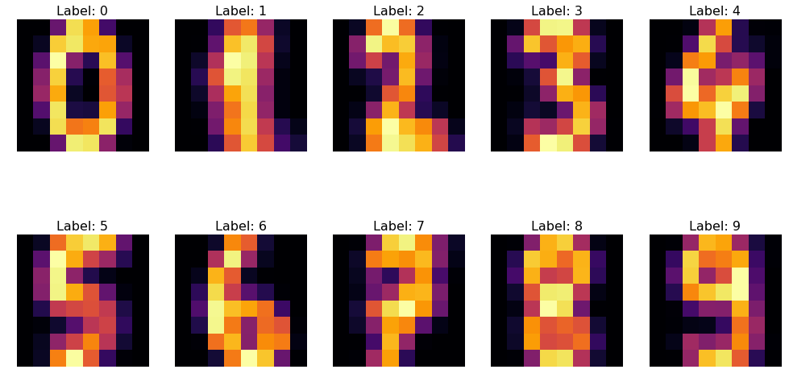
The next figure, instead, reports the difference between the average input of class kk and the average input from any other input.
It is just a way to see how each input differs and is unique.
plt.figure(figsize=(17, 9))
for kk in range(10):
plt.subplot(2, 5, kk+1)
Xavg = np.mean(XX[YY==kk, :], axis=0).reshape(-1, 8)
Xcompl = np.mean(XX[YY!=kk, :], axis=0).reshape(-1, 8)
plt.imshow(Xavg-Xcompl, cmap='inferno')
plt.title('Label: ' + str(kk), fontsize = 16)
plt.axis('off')
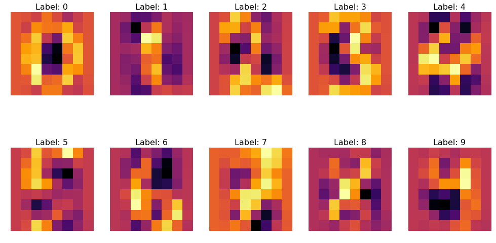
7.2 Model Parameters
It is interesting to observe how the weights’ structure somehow resembles the input pattern for class 0, 3 and 6, while it is pretty flat and uniform for class 1, 8 and 9.
However, the corresponding biases for these three cases are quite different to correctly classify the input.
Even when the weights’ structure of a given class doesn’t look like the input pattern, it has specific values that are either very positive or negative where the input pattern for that class differs from inputs of any other class.
Wcoef = lgr.coef_.T
bcoef = lgr.intercept_
plt.figure(figsize=(15, 11))
for kk in range(10):
plt.subplot(3, 4, kk+1)
plt.imshow(Wcoef[:, kk].reshape(8, -1), cmap='inferno')
plt.axis('off')
plt.title('Label: ' + str(kk), fontsize = 16)
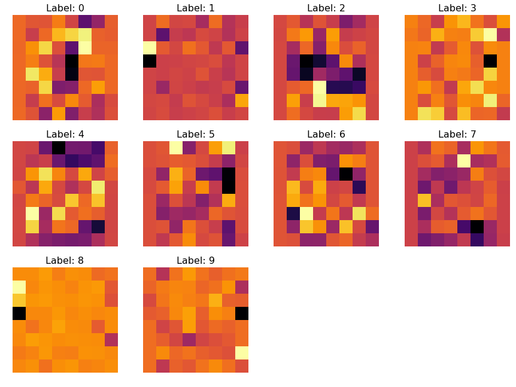
plt.figure(figsize=(8, 9))
plt.imshow(bcoef.reshape(-1, 5), cmap='inferno')
plt.axis('off');
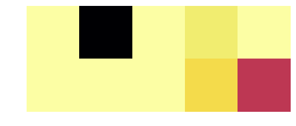
7.3 How is the same input transformed by different classes’ weights
The figures below show how the input from the same class gets changed by each and every weight array Wcoef[:,kk] to return the kk class logit (up to the additive constant bias, bcoef[kk]).
Recall that very positive/negative logits lead to a probability closer to 1/0.
The first example feeds the 0 input, while the second one takes 1 as input.
def visWeights(kinp, kprm=None):
plt.figure(figsize=(17, 11))
for kk in range(10):
plt.subplot(3, 4, kk+1)
kinp_ = kinp if kinp is not None else kk
Xavg = np.mean(XX[YY==kinp_, :], axis=0).reshape(-1, 8)
kprm_ = kprm if kprm is not None else kk
WW_, bb_ = Wcoef[:,kprm_].reshape(-1,8), bcoef[kprm_]
logits = np.sum(Xavg*WW_) + bb_
plt.imshow(Xavg*WW_, cmap='inferno')
plt.title('Label: {}, logit: {:0.1f}, bias: {:0.1f}'.format(kk, logits, bb_), fontsize = 13)
plt.axis('off')
if kk==kinp:
plt.colorbar(orientation='horizontal')
visWeights(0, kprm=None)
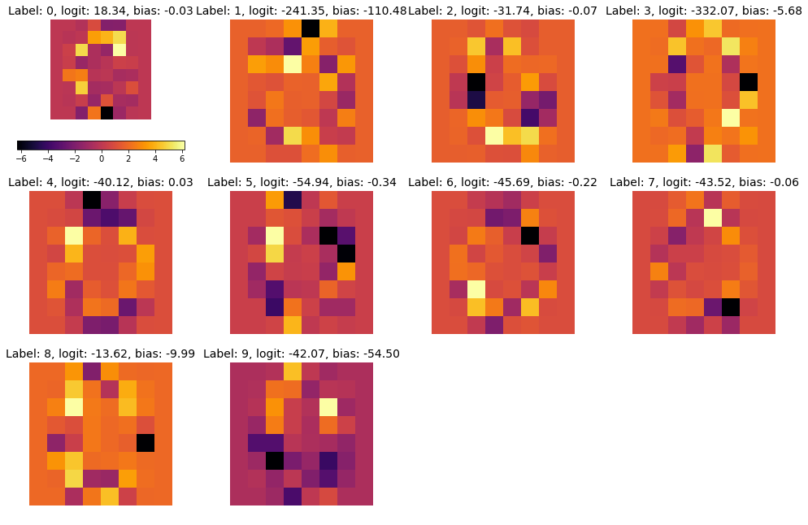
visWeights(1, kprm=None)
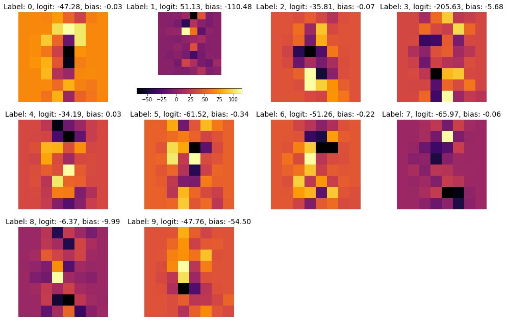
7.4 How the same class weight array transform different classes’ inputs
The figures below show how each input from the 10 classes get changed by the weight array Wcoef[:,kprm] from the same class kprm.
The first example feeds the 0 input, while the second one takes 1 as input.
visWeights(kinp=None, kprm=0)
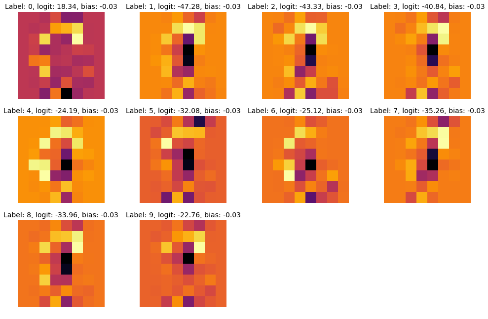
visWeights(kinp=None, kprm=1)
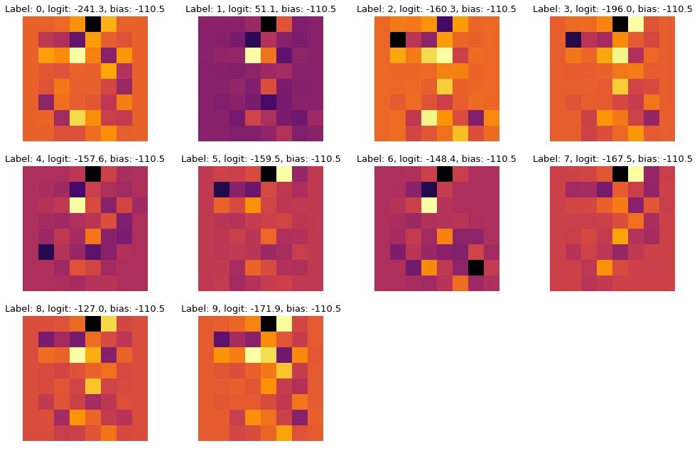